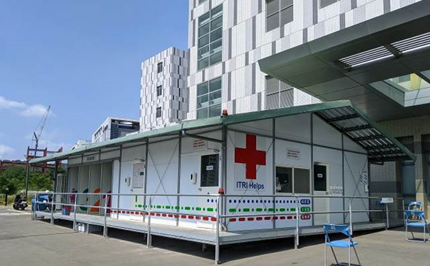
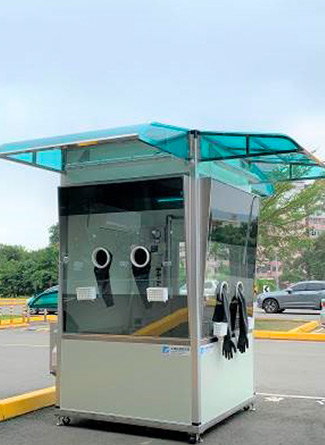
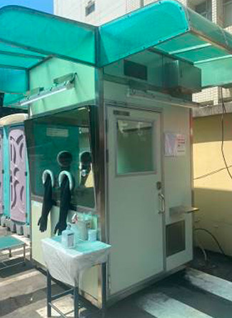
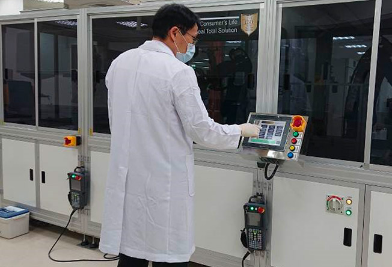
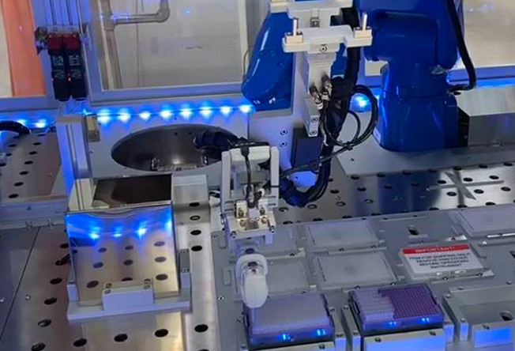

面對嚴峻疫情，本院快速佈署防疫工作。例如，建置戶外疫病篩檢區，與工研院聯手研發「戶外篩檢組合屋」(設置於竹北院區) (圖1)及「正壓檢疫亭」三院區合計8臺正壓採檢亭(圖2-3)：新竹4臺、竹北2臺及竹東2臺。
快速啟動組合屋戶外篩檢站和正壓檢疫亭，確保第一線採檢醫護人員安全，更落實醫院分艙、分流、專責、輪調制度，避免病毒散佈到院區風險，確保醫療服務量能順暢執行，一來全面提升採檢量能，也避免急診室擁入大量疑似個案造成壅塞，全方位降低院內感染風險。

生醫醫院竹北院區戶外篩檢組合屋。

生醫醫院竹東院區正壓篩檢亭。

新竹醫院正壓篩檢亭。
2021年5月中旬，全臺Covid-19疫情爆發，確診人數由2位數攀升到3位數。
各醫院及各地篩檢站之採檢需求，隨著確診人數而暴增。
因應龐大採檢需求，為避免PCR檢驗塞車，本院同年6月引進國內最新、最快速的「高通量全自動新型冠狀病毒核酸檢測系統」(圖4-5)。每日最大檢驗量達1,440個檢體，提高檢驗量能，而且迅速了解準確檢驗結果，縮短檢驗時間，有效解決檢體塞車的問題，防止疫情擴大。

高通量全自動新型冠狀病毒核酸檢測系統。

核酸萃取區之機械手臂自動分注試劑。